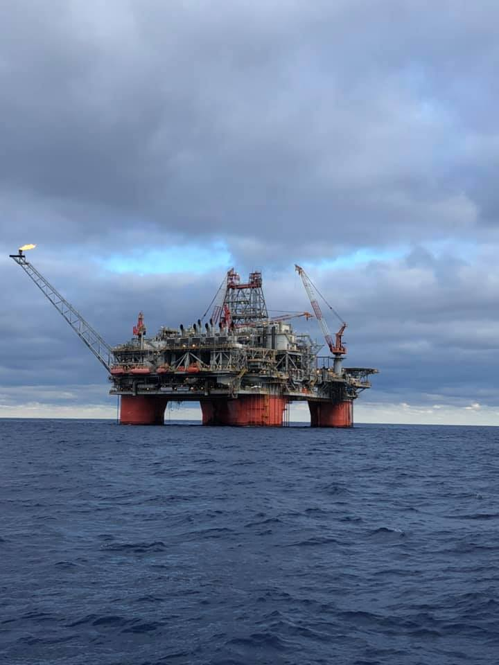

With 10+ years of experience, I have gained my knowledge in well drilling field engineer,
data analysis, test engineering and production supervision. My technical support skills enable me to solve complex issues,
while my data interpretation and analysis abilities help me drive successful business solutions. I also have a chance to
work with many different people who are from different countries.
Petroleum Engineer - Schlumberger Canada Ltd.
Manufacture Production Supervisor - Intel Corporation.
Test Engineer - Intel Corporation.
Field Engineer - Schlumberger Oversea.
Schlumberger|
To be offshore worker can be an exciting and rewarding experience, especially for multinational company
such as Schlumberger. I had a chance to work in multinational cultural and different places.
Working offshore can be very challenging, as it requires spending extended periods of time away from home, miss life events and
facing harsh weather conditions. However, the rewards are significant and the change to work in a dynamic and high-tech environment.

Below is a video which will give you a idea how is life on offshore rig, This is also the place where i am working now
(Offshore Newfoundland - Life on Hebron)
Intel Corp |As a manufacture production and test engineer at Intel, I had the opportunity to work in a fast-paced and
highly technical environment, playing a critical role in ensuring that the company reached the target and provide highest quality standards.
It also gave me a chance to work with cutting-edge technologies and collaborate with talented colleagues
from diverse backgrounds.